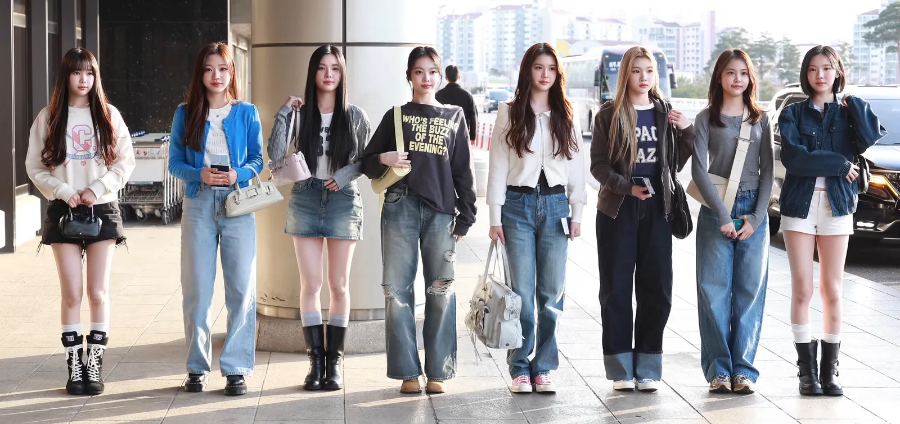
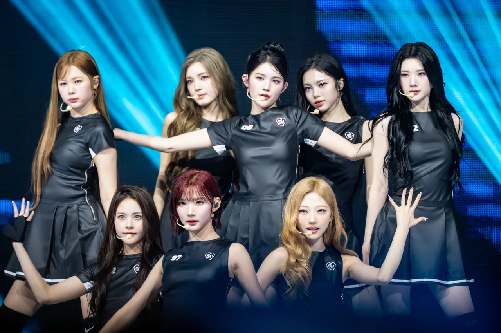

▲ 기아 쏘렌토. 스포티지·카니발과 함께 2026년 8월 27일 '블랙 에디션' 스페셜 트림이 새로 추가된 RV 3종 중 하나다
2026년 9월 9일 오후 6시, SM엔터테인먼트 신인 걸그룹 하츠투하츠(Hearts2Hearts)가 각종 음원 사이트를 통해 새 싱글 'Moonride'를 공개했습니다. 이 곡은 단순한 신곡이 아니라, 기아가 같은 날 함께 선보인 RV '블랙 에디션' 캠페인의 음원이자 뮤직비디오입니다. 지금까지 이 시리즈에서 다룬 제네시스×한소희, 볼보×김혜수·조여정, 벤츠AMG×주지훈, 폴스타×김우빈은 모두 드라마·영화 PPL이거나 브랜드 앰버서더 발탁이었습니다. 이번 건은 다릅니다. 차량이 극 중 소품으로 등장하거나 배우의 이미지에 얹혀가는 방식이 아니라, 브랜드가 곡과 뮤직비디오 제작 자체를 기획하고 비용을 댄 사례입니다.
1. 왜 드라마가 아니라 뮤직비디오였나
기아가 밝힌 설명을 보면 이 곡의 기획 의도가 분명하게 드러납니다. "기아 RV의 역동적인 움직임에 주목해 경쾌한 리듬과 몽환적인 사운드로 밤의 드라이브 감성을 담아냈다"는 것이 공식 설명입니다. 드라마 PPL은 차가 등장인물의 삶 속에 자연스럽게 녹아드는 방식으로 존재감을 만들지만, 그만큼 차 자체에 할애되는 시간과 주목도는 제작진의 연출에 좌우됩니다. 반면 뮤직비디오는 처음부터 끝까지 차량과 음악을 하나의 콘셉트로 묶어 설계할 수 있습니다. '밤의 드라이브'라는 곡의 테마 자체가 RV의 주행 장면을 자연스럽게 반복적으로 노출시키는 구조입니다.
여기에 음원이라는 형식의 이점도 있습니다. 드라마는 방영이 끝나면 화제성이 급격히 꺾이지만, 음원은 스트리밍과 유튜브를 통해 발매 이후에도 반복 재생됩니다. 팬덤이 형성된 아이돌 그룹의 노래일 경우 이 반복 재생 주기는 더 깁니다. 실제로 'Moonride' 뮤직비디오는 공개 8일 뒤인 9월 17일 보도 기준 264만 조회수를, 함께 공개된 비하인드 영상도 22만 조회수를 기록했습니다. 광고 한 편이 도달하기 어려운 자발적 재생량입니다.
| 브랜드 | 협업 형태 | 인물/그룹 | 콘텐츠에서 차의 위치 |
|---|---|---|---|
| 제네시스 GV80 | 영화 PPL | 한소희 | 극중 소품 |
| 볼보 XC90·S90 | 드라마 협찬 | 김혜수·조여정 | 극중 소품 |
| 메르세데스-AMG | 브랜드 앰버서더 | 주지훈 | 이미지 매칭 |
| 폴스타 | 브랜드 앰버서더 | 김우빈 | 이미지 매칭 |
| 기아 RV 블랙 에디션 | 뮤직비디오 콜라보 | 하츠투하츠 | 콘텐츠의 중심 소재 |

▲ 하츠투하츠. 2025년 2월 SM엔터테인먼트가 5년 만에 선보인 신인 걸그룹으로, 8인조로 데뷔했다 ⓒ 티비텐, CC BY 3.0, Wikimedia Commons
2. 하츠투하츠라는 선택 — 신인 그룹이 가진 '확장 여백'
하츠투하츠는 2025년 2월 24일 SM엔터테인먼트가 에스파 이후 약 5년 만에 선보인 신인 걸그룹입니다. 지우·카르멘·유하·스텔라·주은·에이나·이안·예온 8명으로 구성됐고, 창립자 이수만이 프로듀싱에 참여하지 않은 첫 SM 걸그룹이라는 점에서도 주목받았습니다. 데뷔곡 '더 체이스' 이후 낸 'RUDE!'는 2026년 2월 공개 약 두 달 만에 유튜브 조회수 1억 뷰를 넘기며 그룹 최초로 억대 조회수 뮤직비디오를 기록했고, 미니 2집 'Lemon Tang'에 이어 2026년 8월 12일에는 일본 첫 싱글 'ICONIC HEART'로 현지 데뷔해 오리콘 데일리 싱글 차트 2위에 오른 상태에서 이번 콜라보를 진행했습니다.
이미 확고한 이미지가 굳어진 톱스타를 캐스팅하는 앰버서더 방식과 달리, 데뷔 1~2년 차 신인 그룹과의 협업은 브랜드가 이미지를 함께 만들어갈 여지가 크다는 이점이 있습니다. 폴스타가 김우빈에게서 이미 완성된 '신뢰의 서사'를 가져왔다면, 기아는 하츠투하츠라는 성장 중인 그룹의 팬덤 확장 곡선에 RV 블랙 에디션이라는 신제품 인지도를 함께 태운 셈입니다. Z세대·MZ세대를 주 타깃으로 삼아온 기아의 최근 마케팅 기조와도 맞닿아 있습니다.

▲ 2026년 2월 팬미팅 '하트2하우스'에서의 하츠투하츠. 같은 달 공개한 'RUDE!' 뮤직비디오는 약 두 달 만에 유튜브 1억 뷰를 넘기며 그룹 최초의 억대 조회수 기록을 세웠다 ⓒ sublimitas viii, CC BY-SA 4.0, Wikimedia Commons

▲ 기아 카니발. 스포티지·쏘렌토와 함께 이번 블랙 에디션 라인업에 포함된 RV 3종 중 하나다
3. 기아 RV 블랙 에디션 — 신차가 아니라 '스페셜 트림'
'Moonride'가 알리는 대상은 신형 모델이 아니라 기존 RV 3종에 새로 추가된 스페셜 트림입니다. 기아는 2026년 8월 27일 스포티지·쏘렌토·카니발의 최상위 트림 '시그니처'를 기반으로 한 '블랙 에디션'과, 연식변경 모델인 '더 2027 스포티지·쏘렌토·카니발'을 함께 출시했습니다. 블랙 에디션은 헤드레스트 엠블럼과 블랙 스웨이드 헤드라이닝 등 실내 전용 디자인 요소, 다크 메탈·블랙 유광 소재의 외장과 전용 신규 휠로 기존 모델과 차별화를 뒀습니다.
스페셜 트림은 완전 신차와 달리 화제성을 만들기가 더 어렵습니다. 이미 시장에 나와 있는 모델의 파생 상품이기 때문입니다. 기아가 이 지점에서 뮤직비디오라는 카드를 꺼낸 것은, 기존 모델 라인업의 존재감을 다시 환기시키는 데는 스토리텔링이 필요하다는 판단으로 읽힙니다. '블랙'이라는 트림명에서 착안한 '달빛 아래 밤의 드라이브'라는 곡의 콘셉트도 이런 맥락에서 나왔을 가능성이 큽니다.
| 모델 | 기반 트림 | 주요 특징 |
|---|---|---|
| 스포티지 | 시그니처 | 블랙 헤드라이닝·전용 휠·다크 메탈 외장 |
| 쏘렌토 | 시그니처 | 블랙 헤드라이닝·전용 휠·다크 메탈 외장 |
| 카니발 | 시그니처 | 블랙 헤드라이닝·전용 휠·다크 메탈 외장 |
기아가 현대자동차그룹을 통해 공개한 보도자료를 보면, 이번 협업은 특정 한 차종만을 내세운 것이 아니라 스포티지·쏘렌토·카니발 블랙 에디션 3종을 음원·뮤직비디오·광고 영상, 그리고 팝업 전시에 함께 활용하는 방식으로 진행됐습니다. 뮤직비디오 한 편에 차 한 대를 몰아주기보다, 블랙 에디션이라는 트림 자체의 존재감을 RV 라인업 전반에 걸쳐 각인시키려는 의도로 읽힙니다.

▲ 쏘렌토 후면. 블랙 에디션은 다크 메탈·블랙 유광 소재 외장과 전용 신규 휠로 기존 모델과 차별화를 뒀다

▲ 기아 스포티지. 블랙 에디션은 시그니처 트림을 기반으로 한 전용 디자인 패키지로 출시됐다
4. 코카콜라×뉴진스, 펩시×아이브 — 자동차 업계가 뒤따르는 이유
브랜드가 아이돌의 신곡 제작에 직접 관여하는 방식은 자동차 업계보다 음료 업계에서 먼저 자리 잡았습니다. 2023년 코카콜라는 뉴진스를 글로벌 앰버서더로 세우고 컬래버 음원 'Zero'를 발표해 국내 음원 실시간 차트 1위, 뮤직비디오 1700만뷰를 기록했습니다. 석 달 뒤 펩시는 아이브의 '아이 원트(I WANT)'로 맞불을 놓으며 Z세대를 겨냥한 스타 마케팅 경쟁을 벌였습니다. 두 사례 모두 핵심은 같았습니다. 광고처럼 소비되지 않고 팬들이 자발적으로 찾아 듣는 콘텐츠로 브랜드 메시지를 실어 보내는 것입니다.
자동차는 음료보다 단가가 높고 구매 주기가 긴 제품입니다. 그런 만큼 이런 방식이 곧바로 판매로 연결되긴 어렵습니다. 다만 기아가 노리는 것은 이번 트림 출시 자체의 단기 판매량보다, RV 라인업 전반에 대한 인지도를 Z세대·MZ세대 소비층에게 심는 일에 가깝습니다. 이 시리즈에서 다뤄온 드라마 PPL과 앰버서더가 30~50대 시청층·구매층을 겨냥했다면, 음악 콜라보는 아이돌 팬덤을 중심으로 한 더 젊은 세대를 향한 접근입니다. 차량이 배경 소품에서 콘텐츠의 주인공으로 자리를 옮긴 것도 이 타깃 전환과 무관하지 않습니다.

▲ 쏘렌토 실내. 블랙 에디션은 헤드레스트 엠블럼과 블랙 스웨이드 헤드라이닝 등 전용 디자인 요소를 더했다

▲ 기아 카니발. 팝업 행사장인 성동구 기아 언플러그드 그라운드에는 스포티지·쏘렌토·카니발 블랙 에디션이 함께 전시됐다
정리하면, 이번 콜라보는 신곡 발매 소식처럼 가볍게 소비되기 쉽지만 실제로는 자동차 브랜드가 콘텐츠 마케팅의 무게중심을 옮기는 방식을 보여주는 사례입니다. 제네시스와 볼보가 극중 배역에, 벤츠AMG와 폴스타가 배우 개인의 이미지에 차를 실었다면, 기아는 아예 차량의 움직임과 콘셉트를 곡의 재료로 삼아 팬덤이 스스로 재생하고 퍼뜨리는 콘텐츠를 만들었습니다. 드라마 협찬 한 편, 앰버서더 한 명을 세우는 것을 넘어 신곡 한 곡을 통째로 기획하는 것, 그것이 이번 사례가 앞선 네 편과 갈라지는 지점입니다.